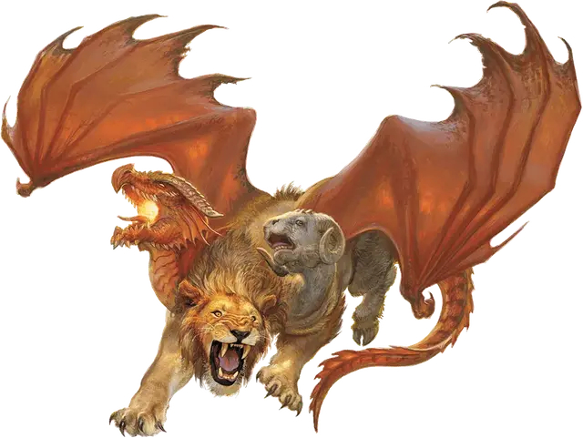

Химера
Chimera
Большой Монстр, хаотично-злой

Класс Доспеха 14 (природный доспех)
Хиты 114 (12к10 + 48)
Скорость 30 футов, летая 60 футов
| мод | спас | ||
|---|---|---|---|
| СИЛ | 19 | +4 | +4 |
| ЛОВ | 11 | +0 | +0 |
| ТЕЛ | 19 | +4 | +4 |
| мод | спас | ||
|---|---|---|---|
| ИНТ | 3 | −4 | −4 |
| МДР | 14 | +2 | +2 |
| ХАР | 10 | +0 | +0 |
Навыки Восприятие +8
Чувства тёмное зрение 60 футов, пассивное Восприятие 18
Языки понимает Драконий, но не говорит
Опасность 6 (2300 опыта)
Бонус мастерства +3
Среда обитания Горы, Луг, Подземье, Холмы
Действия
Мультиатака. Химера совершает три атаки: одну укусом, одну рогами, и одну когтями. Если Огненное дыхание доступно, она может использовать его вместо укуса или рогов.
Укус. Рукопашная атака оружием: +7 к попаданию, досягаемость 5 футов, одна цель. Попадание: Колющий урон 11 (2к6 + 4).
Рога. Рукопашная атака оружием: +7 к попаданию, досягаемость 5 футов, одна цель. Попадание: Дробящий урон 10 (1к12 + 4).
Когти. Рукопашная атака оружием: +7 к попаданию, досягаемость 5 футов, одна цель. Попадание: Рубящий урон 11 (2к6 + 4).
Огненное дыхание (перезарядка 5–6). Драконья голова выдыхает огонь 15-футовым конусом. Все существа в этой области должны совершить спасбросок Ловкости Сл 15, получая урон огнём 31 (7к8) при провале, или половину этого урона при успехе.
Описание
Химеры были созданы после того как смертные призвали в мир Демогоргона. Князь Демонов, не впечатленный окружающими его существами, превратил их в ужасных многоголовых чудовищ. Так появились первые химеры.
Наделенные демонической жестокостью, химеры служат ужасным напоминанием о том, что случается, когда князья демонов находят путь на Материальный План. Типичный образец выглядит следующим образом: задняя часть крупного козла, передняя часть льва, кожистые крылья дракона, и головы всех трех существ. Монстр атакует своих жертв внезапно, бросаясь с неба и окутывая жертву своим огненным дыханием, перед тем как приземлиться.
Противоречивое существо. Химера сочетает худшие аспекты трех разных существ. Голова дракона отвечает за набеги, грабежи и накопление значительных богатств. Львиная натура заставляет охотиться и убивать сильных существ, которые вторгаются на её территорию. Голова козла придает злобность и упрямство, заставляя сражаться до смерти.
Все эти мотивы движут химерой, считающей территорию более 10 миль в поперечнике своей территорией. Она охотится на дичь, присматриваясь к более могущественным созданиям как к соперникам, которых нужно победить и унизить. Их самыми опасными врагами являются виверны, грифоны, драконы, мантикоры и перитоны.
Во время охоты химера отыскивает какие-нибудь несложные способы себя развлечь. Она наслаждается, пугая и мучая более слабых существ. Этот монстр часто играет со своей жертвой, неожиданно прекратив нападение, оставляя раненое и напуганное существо только для того, чтобы потом вернуться и прикончить его.
Прислужник зла. Несмотря на то, что химеры далеки от хитрости, их драконье эго делает их восприимчивыми к лести и подаркам. Если предложить еду и сокровища, химера может пощадить путешественника. Злодей может привлечь химеру к себе на службу, если будет поддерживать её сокровищницу полной, а саму её хорошо накормленной.